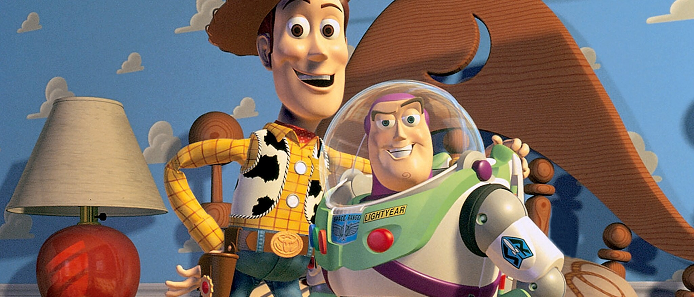
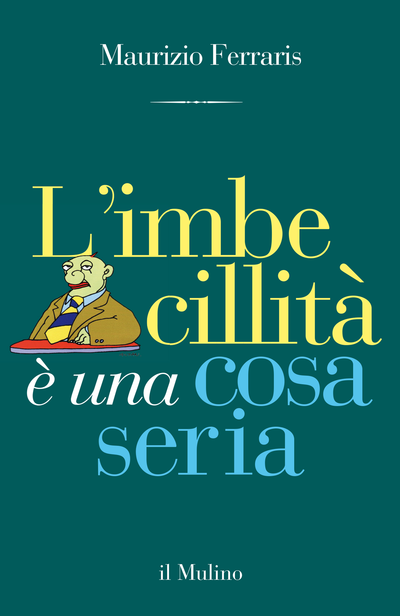

54:36 · 10 OPERE
A che punto siamo arrivati quando i cattedratici che si dicono
Il filo del discorso
Una intervista a Maurizio Ferraris offre a Dr Divago l’occasione per una polemica sul ruolo pubblico della filosofia. Il contributo si apre con la figura di un giocattolo astronauta, riconoscibile come Buzz di Toy Story, e con la metafora dei materiali distribuiti ai bambini per indirizzarne il gioco. Il relatore vi paragona parole, classificazioni e numeri della comunicazione durante la pandemia: li considera cornici che possono occupare l’attenzione e predeterminare le domande. La scheda distingue questa tesi dalla verifica degli indicatori sanitari: una classificazione convenzionale non è per questo una realtà inventata. Il centro del video è una lettura commentata dell’intervista, nella quale ricorre il titolo L’imbecillità è una cosa seria. Dr Divago rifiuta l’uso della stupidità come spiegazione generale della storia e difende la possibilità della scelta, del genio e della formazione attraverso le opere. Frost, la musica e la ricerca scientifica entrano nel discorso contro una immagine soltanto avvilente della specie. La contrapposizione contiene numerosi attacchi personali: sono giudizi del relatore, dai quali non si ricavano diagnosi, incompetenza accertata o intenzioni criminali degli interlocutori. La discussione tocca il rapporto fra libertà e obblighi, la analogia polemica con il pagamento delle tasse e la distinzione fra errore, caso e azione intenzionale. Un aneddoto attribuito a Newton illustra l’argomento del progetto, ma non è documentato come un fatto biografico. Le ipotesi sulla origine del virus restano separate dal problema di come le istituzioni abbiano reagito alla pandemia. Il dissenso politico non viene trasformato nella prova di un complotto, e una ipotesi di incidente non dimostra da sola la causa dell’evento. Nella parte finale il confronto si concentra sul Fedro. Dr Divago contesta la formula secondo cui Platone avrebbe vietato la scrittura e distingue una critica dei limiti del testo scritto da un divieto letterale. Il rimando a Don Ferrante introduce il problema di una erudizione incapace di correggersi davanti ai fatti; Diderot richiama la possibilità di imparare a vedere. La chiusa affida a Bonhoeffer una definizione della stupidità come resistenza sociale alle ragioni e ai fatti. È un ritorno al bisogno di giudizio e responsabilità, distinto dalla semplice attribuzione di una etichetta offensiva a chi non condivide una posizione.
I libri nel discorso

Toy Story
Identificazione probabile
Immagine promozionale ufficiale Disney · Toy Story, 1995: Disney–Pixar, 1995, regia di John Lasseter; uscita statunitense 22 novembre 1995, 85 minuti. Materiale promozionale ufficiale Disney con Woody e Buzz, non fotogramma verificato della singola battuta. Non è Lightyear del 2022.
Materiale ufficiale del film con i due personaggi principali; non si attribuisce l’immagine alla esatta scena descritta.
Giocattolo astronauta che crede nella propria missione e battuta sulla vita intelligente: riferimento probabile a Buzz nel film 1995.
Passaggio 0:48 ↗ · Fonti e libro ↗“Anche i filosofi sono imbecilli”. Parla il filosofo Maurizio Ferraris
Foto editoriale dell’intervista · Il Foglio, 2021: Il Foglio, 29 luglio 2021. Immagine editoriale associata all’intervista, non copertina del libro.
Immagine fornita dal giornale: manifestazione con cartello, non ritratto di Ferraris.
Titolo e risposte letti: intervista Carmelo Caruso a Maurizio Ferraris, Il Foglio29luglio 2021.
Passaggio 6:44 ↗ · Fonti e libro ↗
L’imbecillità è una cosa seria
Copertina: Il Mulino, Contrappunti, 2016, ISBN 9788815266361. Il sito editoriale indica 132 pagine, la scheda della libreria universitaria 129: differenza conservata. Copertina italiana originale dal servizio immagini del Mulino; il titolo inglese della pagina editoriale non è assunto come una diversa edizione.
Immagine autentica dell’opera, controllata visivamente; l’edizione di riferimento non è attribuita al filmato.
Titolo del libro e Il Mulino espliciti nella presentazione della intervista.
Passaggio 10:05 ↗ · Fonti e libro ↗
The Road Not Taken
Copertina della raccolta: Poesia del 1915, raccolta in Mountain Interval nel 1916. Copertina della raccolta Dover The Road Not Taken and Other Poems, 1993, 64 pagine.
Copertina autentica della raccolta Dover, non fascicolo autonomo della singola poesia o edizione vista nel video.
Robert Frost e la poesia delle due strade citati; la resa italiana è orale e non attribuita a una edizione.
Passaggio 22:54 ↗ · Fonti e libro ↗
Sulla stupidità
Identificazione probabile
Copertina: La Vita Felice, 2013
Musil richiamato sul tema della stupidità, titolo non detto: identificazione probabile.
Passaggio 31:31 ↗ · Fonti e libro ↗
Observations upon the Prophecies of Daniel, and the Apocalypse of St. John
Frontespizio dell’edizione parziale: Frontespizio della ristampa parziale Observations upon the Prophecies of Daniel, a cura di P. Borthwick, London, James Nisbet e T. Stevenson, 1831. Il volume completo originale in due parti uscì postumo nel 1733 presso J. Darby e T. Browne.
Frontespizio dell’edizione del 1831 della parte su Daniele, dalla copia digitale. Non è una copertina esterna e non rappresenta la parte sull’Apocalisse inclusa nel volume originale 1733. Sono visibili firma e segni del documento.
Newton e il trattato sul libro di Daniele espliciti; opera originale riscontrata1733.
Passaggio 36:42 ↗ · Fonti e libro ↗
Fedro
Copertina: BUR · 2006 · a cura di Roberto Velardi
Immagine autentica dell’opera, controllata visivamente; l’edizione di riferimento non è attribuita al filmato.
Il Fedro è esplicitamente identificato nel commento alla critica della scrittura.
Passaggio 45:15 ↗ · Fonti e libro ↗
I promessi sposi
Copertina: BUR · 1998 · introduzione di Guido Bezzola
Immagine autentica dell’opera, controllata visivamente; l’edizione di riferimento non è attribuita al filmato.
Don Ferrante e Manzoni rendono riconoscibile il romanzo e il passo sulla peste.
Passaggio 49:05 ↗ · Fonti e libro ↗
Lettera sui ciechi per quelli che ci vedono
Copertina dell’edizione francese: Gallimard · Folio 4042 · 2024 · edizione francese
Copertina Gallimard, Folio 4042, edizione francese del 2024, ISBN 9782073073587. Il titolo della biblioteca è quello italiano riscontrato in catalogo; l’immagine non identifica una traduzione o un esemplare citati nel video.
Il titolo della lettera ai ciechi a uso di chi vede è riconoscibile e corrisponde all’opera di Diderot.
Passaggio 52:06 ↗ · Fonti e libro ↗Sulla stupidità
Raccolta: Queriniana · Resistenza e resa · edizione di riferimento
Copertina di Resistenza e resa, raccolta indicata dal relatore come provenienza del testo Sulla stupidità. Non è una copertina autonoma del saggio; edizione e traduzione non attribuite alla lettura.
Bonhoeffer esplicito e passo riconoscibile sul rapporto fra stupidità, ragioni e fatti.
Passaggio 53:35 ↗ · Fonti e libro ↗